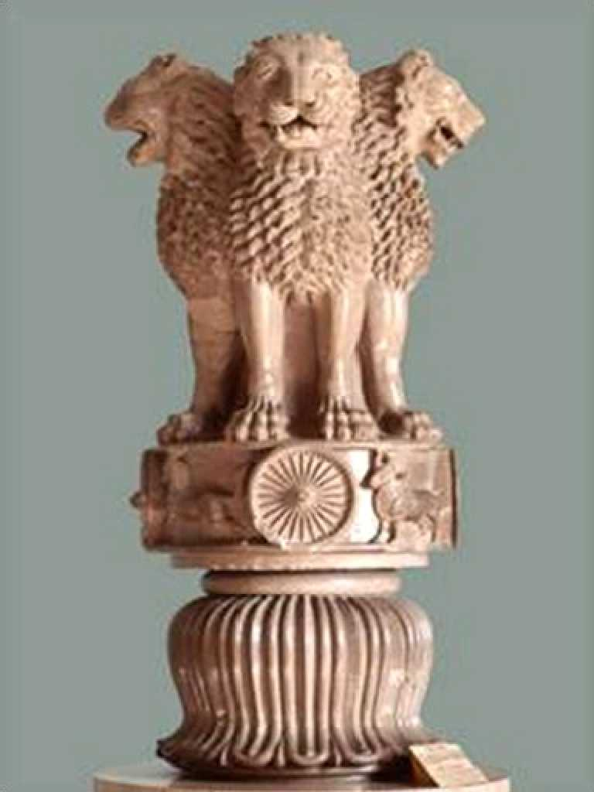
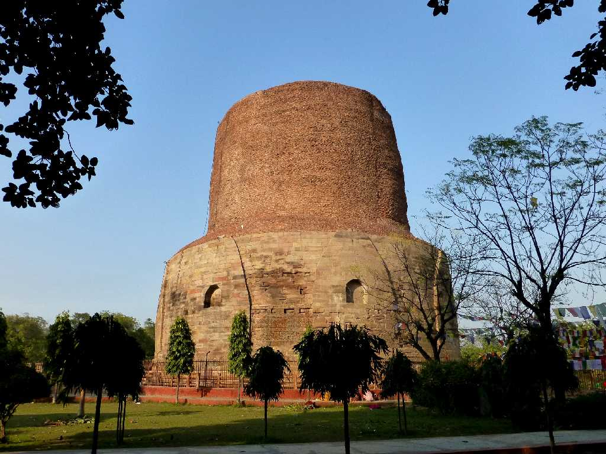
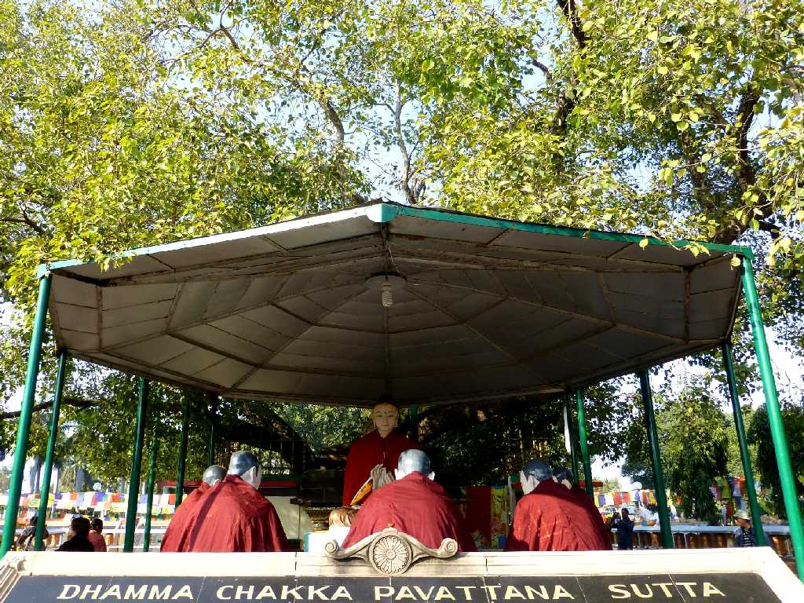
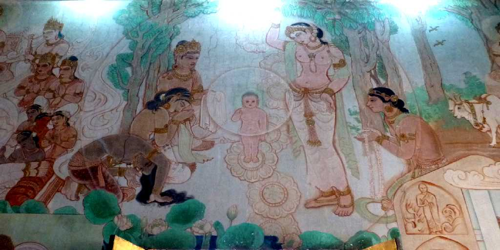
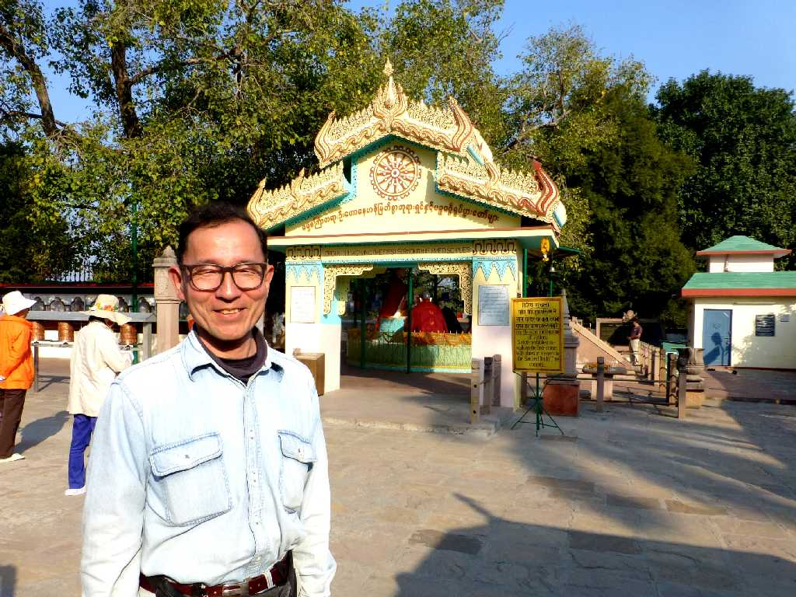

August 1985 Sarnath 転法輪仏座像
初転法輪の地 南伝仏教が５～６世紀に盛んとなり彫像技術が円熟した５世紀後半の傑作といわれている ブッダとはサンスクリプト語で真理を悟った人を意味する 仏教の真理 諸行無常 諸法無我 涅槃寂静

Ashoka Pillar Sarnath
約３０年ぶりの再訪問 インドの国章で総ての紙幣に描かれているアショーカ王の石柱で四頭の獅子像が美しい

Dhamekh Stupa Sarnath
初転法輪の地にあるダメークストゥーパでダメークは宗教が変わるを意味する

Bodhi Tree Mulgandh Kutti Vihar Sarnath
初転法輪寺 菩提樹の下で最初の説教を行った伝えられている

Mural Mulgandh Kutti Vihar
野生司香雪 釈迦誕生

February 1 2015 Bodhi Tree Mulgandh Kutti Vihar

Chaukhandi Stupa
５世紀に創られたチャウカンディーストゥーパ